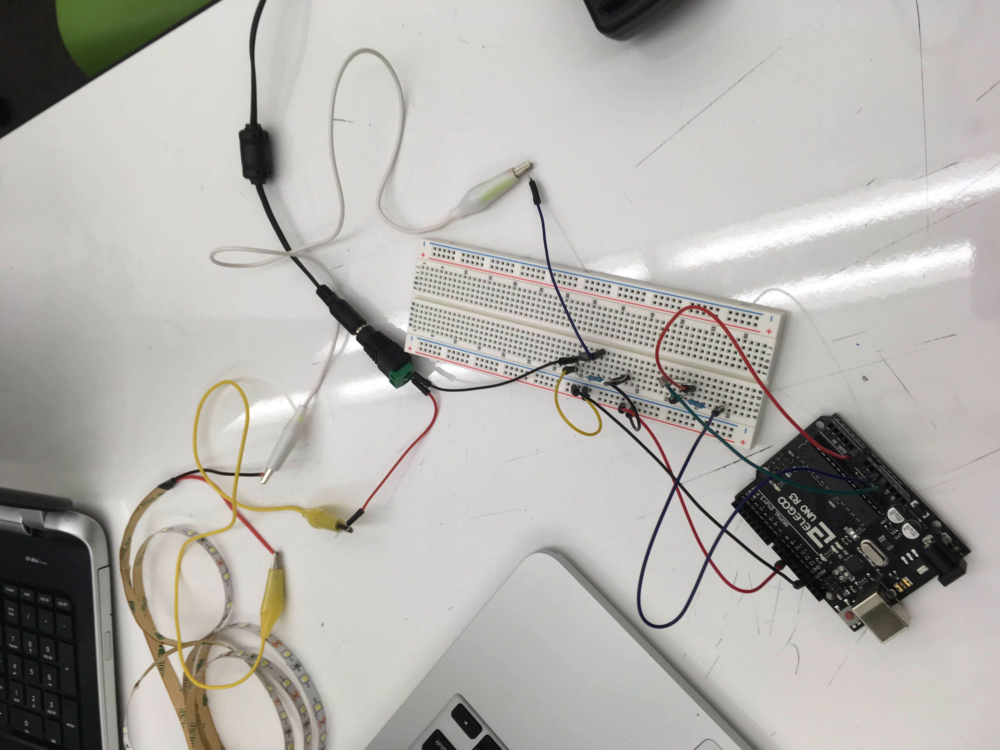
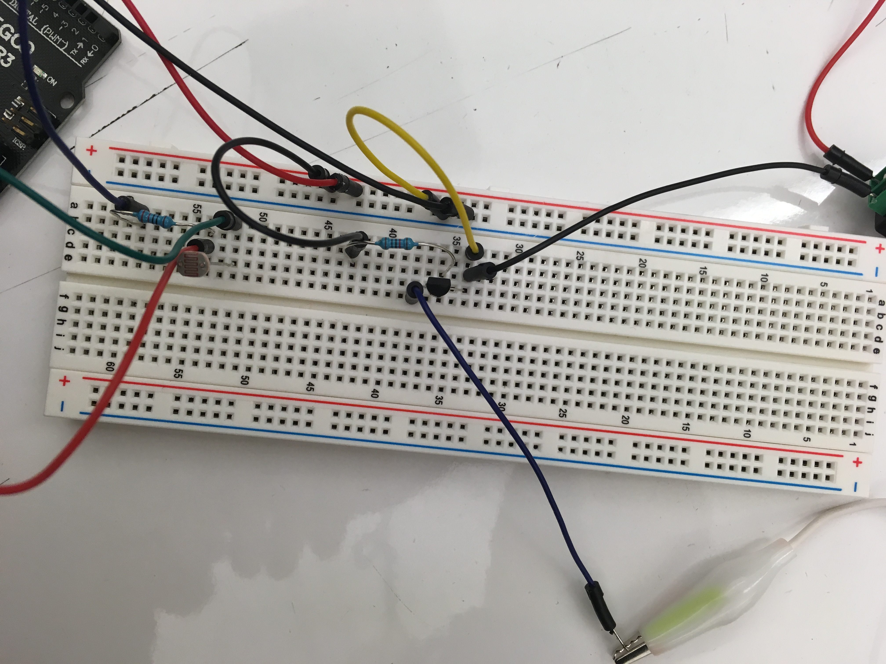

Tre's Assignment 4! Transistors
To test the out transistors and utilizing an LED strip, I made a circuit that controls an LED strip using a photoresistor.
Circuitry and Schematics
 Here is what my breadboard, arduino, and LED wiring looked like by the end of the project.
To utilize an LED strip in my circuit, I needed to use a transistor to correctly integrate such a large power source to the circuit connected to my arduino pin. I used a 10k Ohm current limiting resistor to connect the pin to the base of the transistor so that I did not risk hurting my arduino.
I connected a photoresistor to a power source and an analog pin, which read the light levels and controlled the LED strip based on those levels. I used a 220 Ohm resistor to keep the overall current of that side of the circuitry stable and to make the brightness values it reads within a reasonable range.
The analog pin read light brightness values which ranges from around 25 to 70, which is somewhat determined by the low resistor used in that side of the circuit. The LED is either turned on or off based on if the photoresistor is observing light or if it is now
Though the transistor can use up to a max of .6 amps or current, my circuit only used 5 milliamps of current due to the 10k resistor used on that side of the circuit.
Code and Final Operation
Here my final code:
// This code uses a photoresistor to change analog input/output to determine whether to turn an LED strip on and off
// These constants won't change. They're used to give names to the pins used:
const int analogInPin = A0; // Analog input pin that the potentiometer is attached to
const int analogOutPin10 = 10; // Analog output pin that the red LED is attached to
int sensorValue = 0; // value read from the pot
int outputValue = 0; // value output to the PWM (analog out)
void setup()
{
// initialize serial communications at 9600 bps:
Serial.begin(9600);
// initialize the blue LED to output
pinMode(analogOutPin10, OUTPUT);
}
void loop()
{
// read the analog in value:
sensorValue = analogRead(analogInPin);
// map it to the range of the analog out:
outputValue = map(sensorValue, 0, 1023, 0, 255);
// If the photoresistors sees light
if (sensorValue > 30)
{
analogWrite(analogOutPin10, 200);
} // if the photoresistors sees little to no light
else
{
analogWrite(analogOutPin10, 0);
}
// print the results to the Serial Monitor
Serial.print("\t LED light level = ");
Serial.println(outputValue);
Serial.print("light measurement level =");
Serial.print(sensorValue);
// wait 2 milliseconds before the next loop for the analog-to-digital
// converter to settle after the last reading:
delay(2);
}
Here is the final result, the LED strip attempts to mimic the light that the photoresistor is observing.